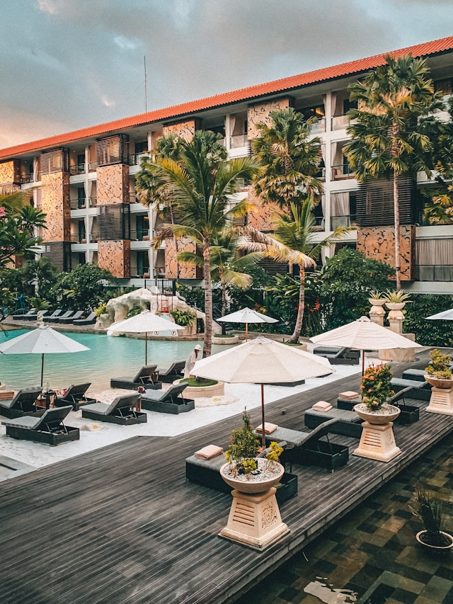
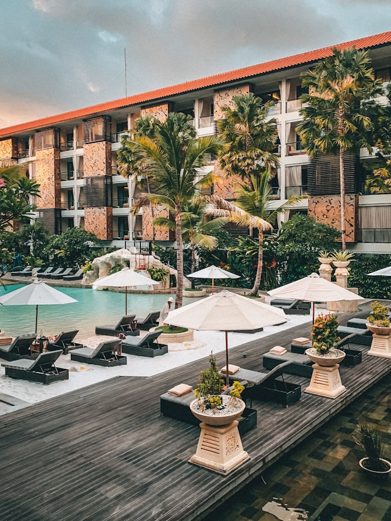

🍔 Dining Options
Savor the flavors of Taniti with a variety of dining experiences, from fresh local seafood to comforting American classics and flavorful Pan-Asian cuisine. With ten restaurants to choose from, there’s something to satisfy every craving.
🏪 Grocery Stores & Convenience
Whether you're looking for fresh ingredients or a quick snack, Taniti has you covered with two supermarkets, two smaller grocery stores, and a 24-hour convenience store for late-night needs.
🏨 Lodging & Accommodations
From cozy family-owned hotels to a luxurious four-star resort, Taniti offers a range of lodging options for every budget. Stay in comfort knowing all accommodations are regularly inspected for quality and safety.
 

🚏 Getting Around
Exploring Taniti is easy with public buses, taxis, and rental cars. Prefer a scenic ride? Rent a bike and enjoy the walkable streets of Taniti City.
Frequently Requested Information:
Power outlets are 120 volts (the same as in the United States).
Alcohol is not allowed to be served or sold between the hours of midnight and 9:00 a.m.
The drinking age on Taniti is 18 and the drinking age is not strictly enforced.
Many younger Tanitians speak fluent English. Very little English is spoken in rural areas, especially by the older residents.
There is one hospital and several clinics. The hospital has many multilingual employees.
Violent crime is very rare on Taniti, but as tourism increases, there are more reports of pickpocketing and other petty crimes.
Taniti enjoys a large number of national holidays, and many tourist attractions and restaurants will be closed on holidays, so visitors should plan accordingly.
Taniti uses the U.S. dollar as its currency, but many businesses will also accept euros and yen. Several banks facilitate currency exchange, and many businesses accept major credit cards.